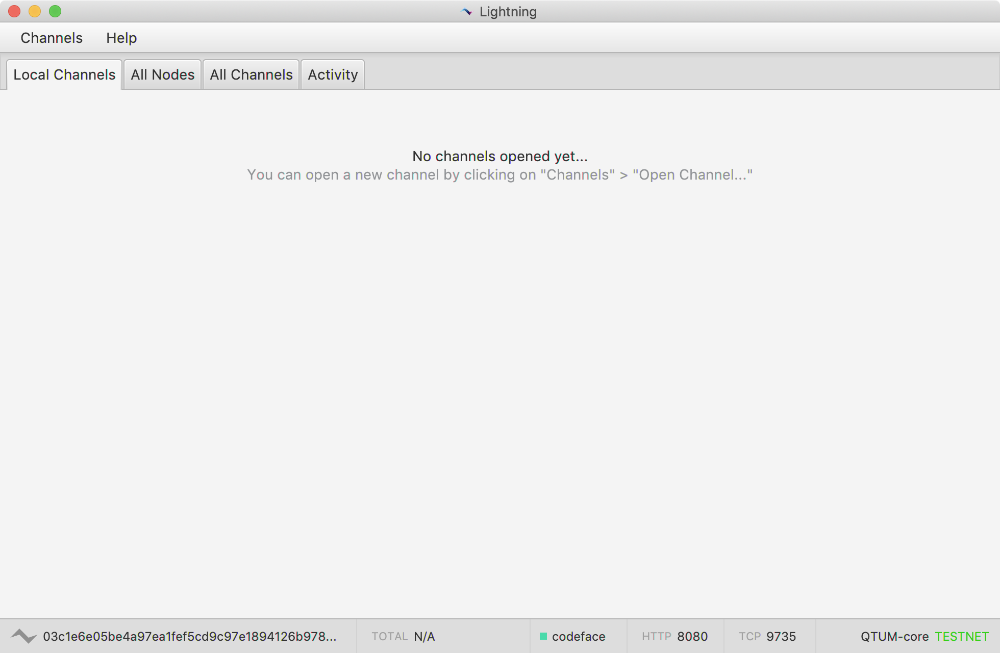
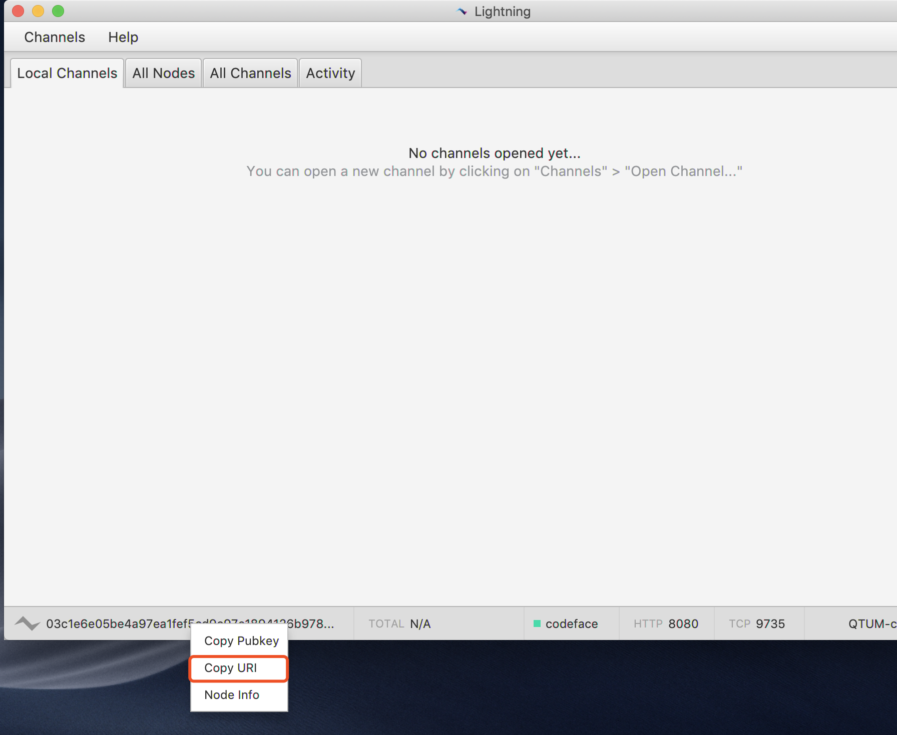
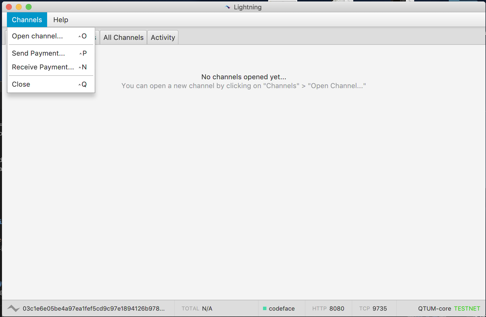
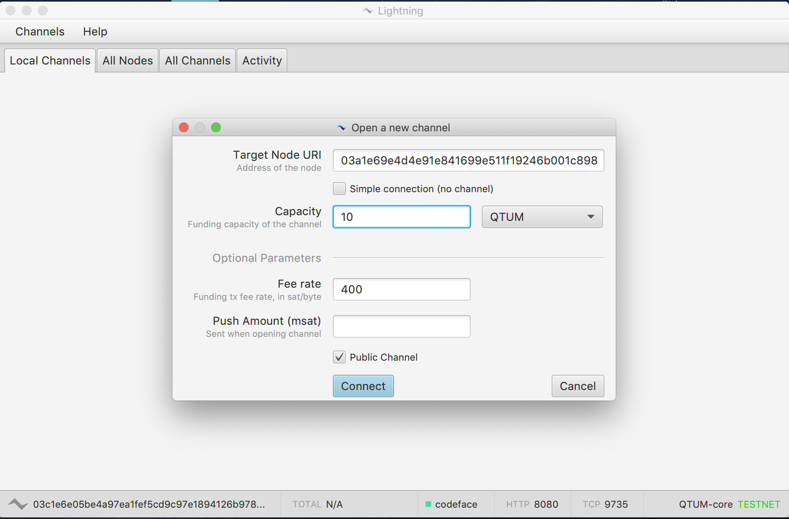
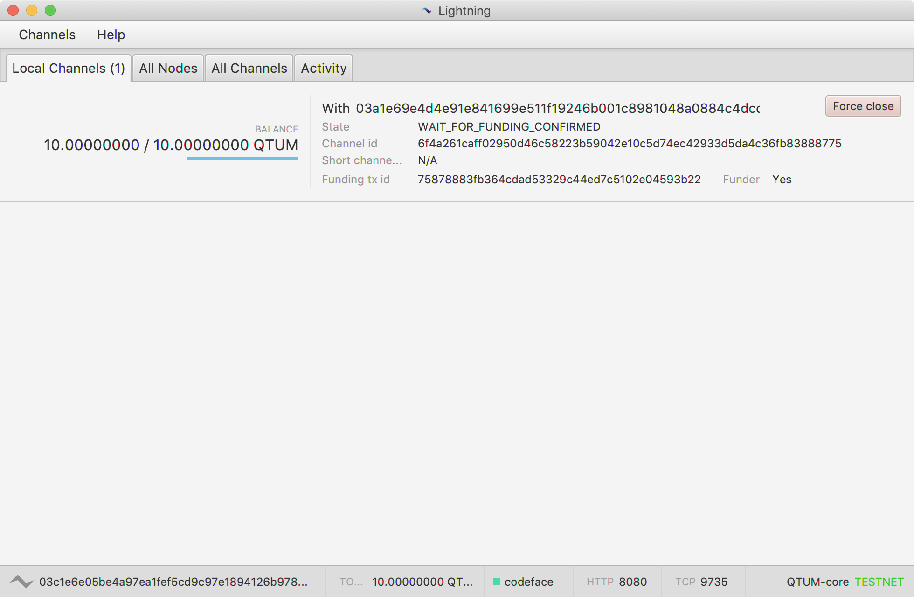
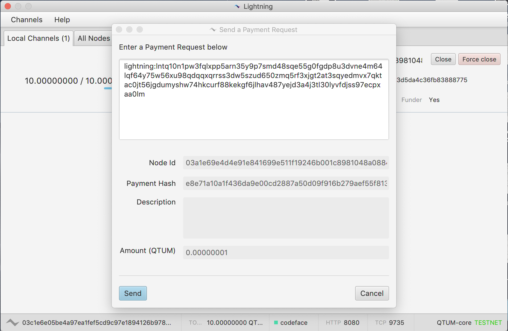
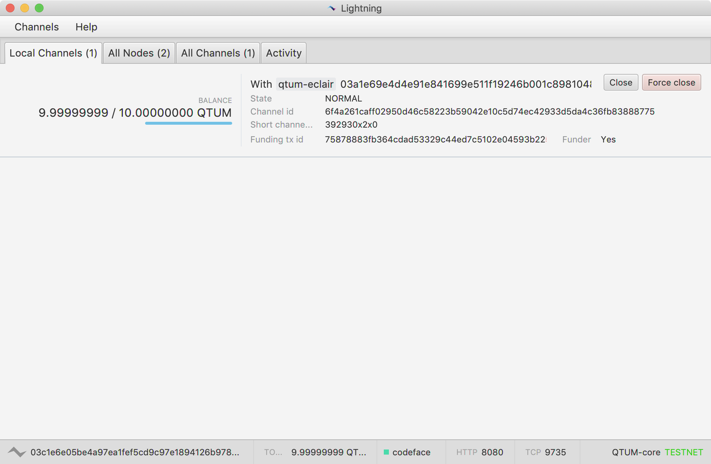
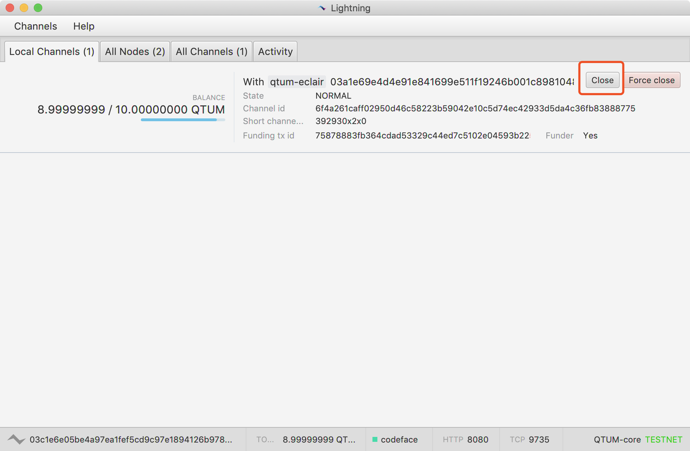
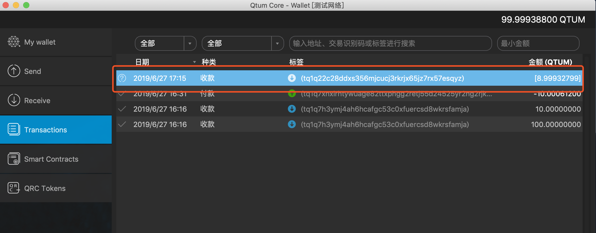

How to run a Kalycoin Lightning network node
Kalycoin has now its own implementation of the lightning network, it uses the eclair client. Currently, this is only supported on testnet, let's check how to set it up and run our very own lightning network client!.
it is recommended to run Debian 10 (buster) as it has all the library versions we need
Install Kalycoin Core
Let's go ahead and install Kalycoin on our Debian 10, the easy way is to use the Kalycoin Debian repository:
Enable the Kalycoin repository
Installing dirmngr and apt-transport-https
These two packages are needed to enable the Kalycoin repository on Debian, let's install them:
apt install -y apt-transport-https dirmngr
Adding repository to your APT sources.
sudo su - Sudo to root first
echo "deb https://repo.explorer.kalycoin.io/apt/debian/ buster main" >> /etc/apt/sources.list.d/kalycoin.list
Add Kalycoin key
Before installing, we need to add the Kalycoin apt key
sudo apt-key adv --keyserver keyserver.ubuntu.com --recv-keys BF5B197D
Refreshing APT sources and installing Kalycoin
sudo apt update && sudo apt install kalycoin
Kalycoin should be installed now, let's continue
Create Kalycoin configuration file
We need to create the .kalycoin folder manually, also, we will create the configuration file inside of that folder, here's how:
mkdir ~/.kalycoin
nano ~./kalycoin/kalycoin.conf
This will create a text file using the nano editor, copy/paste the following inside that file:
server=1
rpcuser=foo
rpcpassword=bar
txindex=1
addresstype=bech32
zmqpubrawblock=tcp://127.0.0.1:29000
zmqpubrawtx=tcp://127.0.0.1:29000
Install Kalycoin Eclair - Lightning client
Let's install some dependencies to prepare for the lightning client:
Install JDK and Maven
Kalycoin Eclair is developed using the Scala language. To run Kalycoin Eclair, you must first install the JDK, and OpenJDK 11 or above is recommended.
apt-get install default-jdk
apt install maven
Build Kalycoin Eclair
Now that we have every dependency installed, it's time to build the Eclair lightning client for Kalycoin. Again, inside our terminal we type:
git clone https://github.com/kalycoinproject/lightning-demo.gitcd lightning-demomvn install -DskipTests
You should see something like this, if there's no errors, we can proceed with creating the configuration file and launch Kalycoin Eclair now.
Run Kalycoin Eclair
Create and edit the configuration file ~/.kalycoin-eclair/eclair.conf as follows:
eclair {
chain = "testnet" // "mainnet" for mainnet, "testnet" for testnet, "regtest" for regtest
server {
public-ips = []
binding-ip = "0.0.0.0"
port = 9735
}
api {
enabled = false
binding-ip = "127.0.0.1"
port = 8080
password = "kalycoin-eclair"
use-old-api = false
}
watcher-type = "bitcoind"
bitcoind {
host = "localhost"
rpcport = 13889
bitdir = ""
rpcuser = "foo"
rpcpassword = "bar"
zmqblock = "tcp://127.0.0.1:29000"
zmqtx = "tcp://127.0.0.1:29000"
}
default-feerates {
delay-blocks {
1 = 1200000
2 = 1000000
6 = 800000
12 = 600000
36 = 500000
72 = 410000
}
}
min-feerate = 400
smooth-feerate-window = 6 // 1 = no smoothing
node-alias = "kalycoin-eclair"
node-color = "49daaa"
global-features = ""
local-features = "8a"
override-features = []
channel-flags = 1
dust-limit-satoshis = 72800
max-htlc-value-in-flight-msat = 500000000000 // 5 KLC
htlc-minimum-msat = 1
max-accepted-htlcs = 30
reserve-to-funding-ratio = 0.01
max-reserve-to-funding-ratio = 0.05
to-remote-delay-blocks = 3600
max-to-local-delay-blocks = 10080
mindepth-blocks = 3
expiry-delta-blocks = 720
fee-base-msat = 400000
fee-proportional-millionths = 100
max-feerate-mismatch = 1.56
update-fee_min-diff-ratio = 0.1
revocation-timeout = 20 seconds
ping-interval = 30 seconds
ping-timeout = 10 seconds
ping-disconnect = true
auto-reconnect = true
payment-handler = "local"
payment-request-expiry = 1 hour
min-funding-satoshis = 1000000 // 0.01 Kalycoin
max-payment-attempts = 5
autoprobe-count = 0
router {
randomize-route-selection = true
channel-exclude-duration = 60 seconds
broadcast-interval = 60 seconds
init-timeout = 5 minutes
path-finding {
max-route-length = 6
max-cltv = 5040
fee-threshold-sat = 8400
max-fee-pct = 0.03
heuristics-enable = true
ratio-cltv = 0.15
ratio-channel-age = 0.35
ratio-channel-capacity = 0.5 }
}
}
// do not edit or move this section
eclair {
backup-mailbox {
mailbox-type = "akka.dispatch.BoundedMailbox"
mailbox-capacity = 1
mailbox-push-timeout-time = 0
}
backup-dispatcher {
executor = "thread-pool-executor"
type = PinnedDispatcher
}
}
PLEASE NOTE if you modified the rpcuser and rpcpassword on kalycoin.conf, please modify this config file accordingly .
Launch Kalycoin Eclair lightning client
Start the client with the command java -jar ./eclair-node-gui/target/lightning-capsule.jar
You should see the eclair desktop client as on the screenshot below:
Create a lightning network channel

Right-click the lower left corner of the local Kalycoin Eclair client and select “Copy URI” to get its node address (public key).

Click the “Channel” button in the upper left corner and select “Open Channel”.

In the pop-up page, fill in the URI of the channel partner, and the capacity of the channel, which is set to 10 KLC as an example, this will be the maximum capacity for this channel, this means, you can only transact up to 10 KLC.
Click “Connect” to create the channel. At this point, you need to wait for 6 blocks to confirm the transaction and the channel will be created successfully.

Lightning Network Payment
Once the channel is set up, you can use the Lightning Network for micropayments.

Click the “Channel” button in the upper left corner, select “Receive Payment”, fill in the receipt amount in the pop-up page, click the “Generate” button to get your own receipt address. Here we choose a very small amount of 1 Satoshi, which is equivalent to 0.00000001 KLC. Such a small transferred amount is unimaginable without using a lightning network.

Click the “Channel” button in the upper left corner, select “Send Payment”, fill in the other party’s lightning network receipt address and amount in the pop-up page, and click the “Send” button, then you can transfer tokens to the other party.
After the transfer is completed, the amount of the two parties’ changes instantaneously. Because this is a pure transaction off the chain, there is no need to wait for the block confirmation, and it is free of fees.
Close the channel for settlement
The channel can be closed when the channel is no longer needed.

Click the “Close” button to close the channel.

Once closed, the remaining KLC in the channel will be refunded to the origin Kalycoin Core wallet.